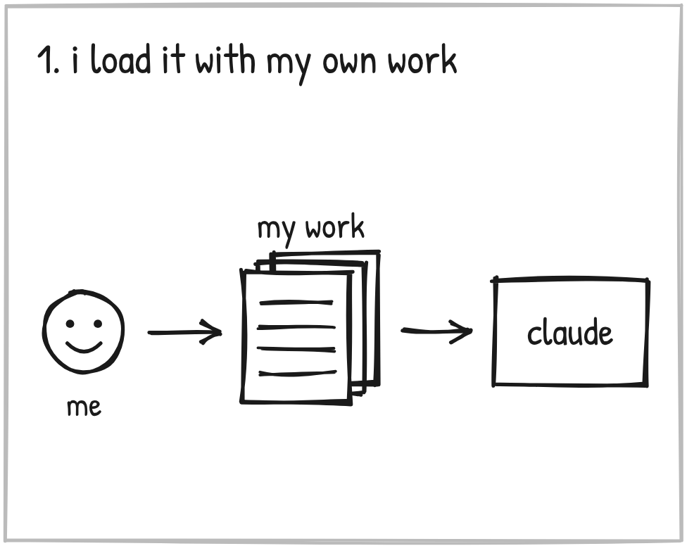
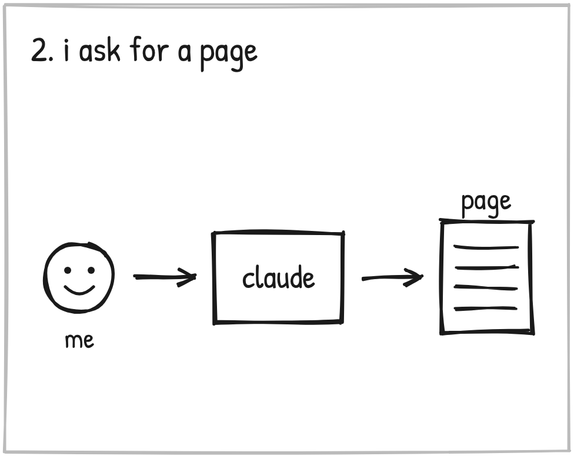
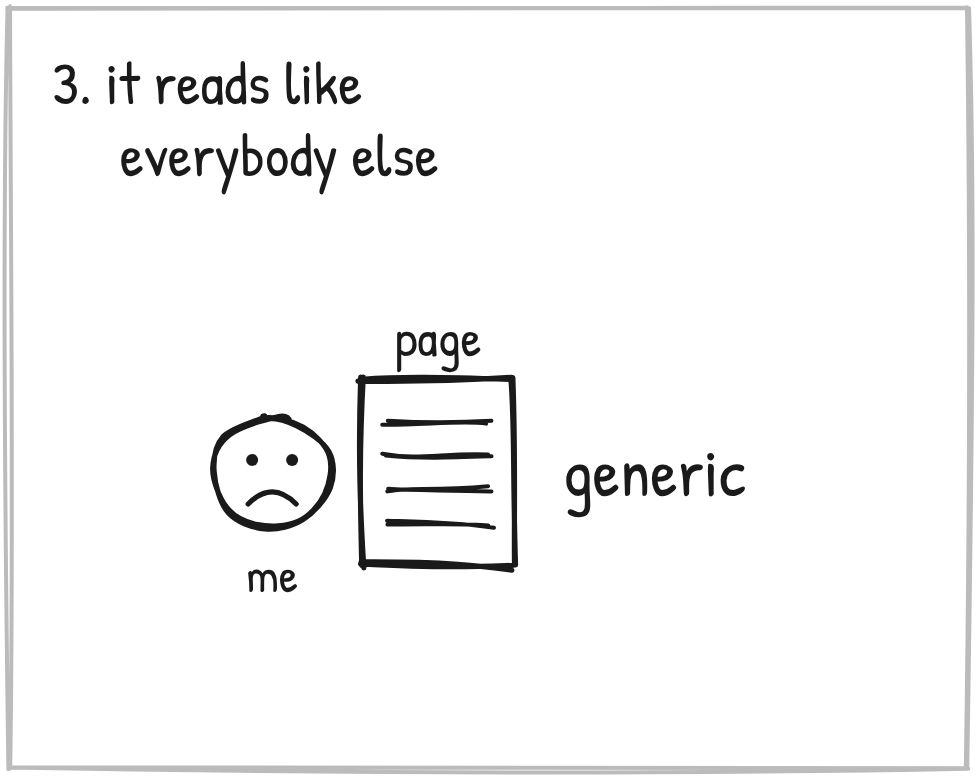
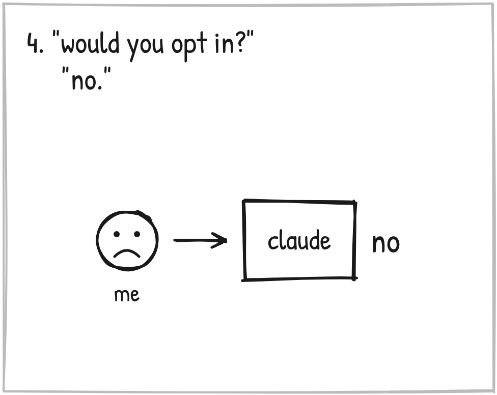
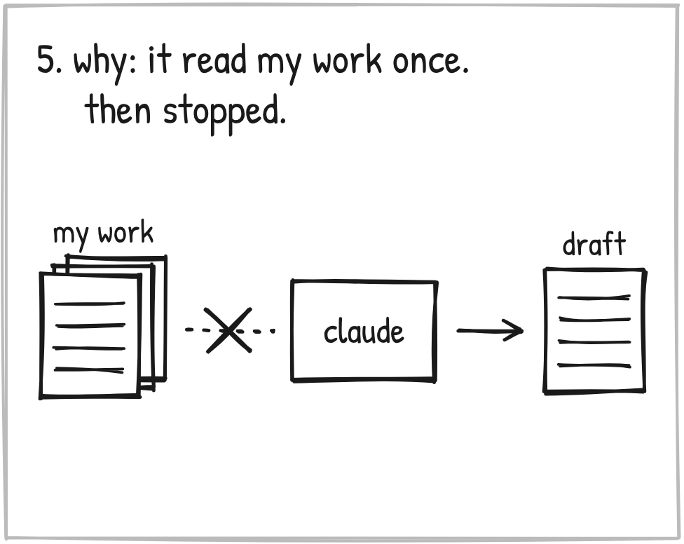
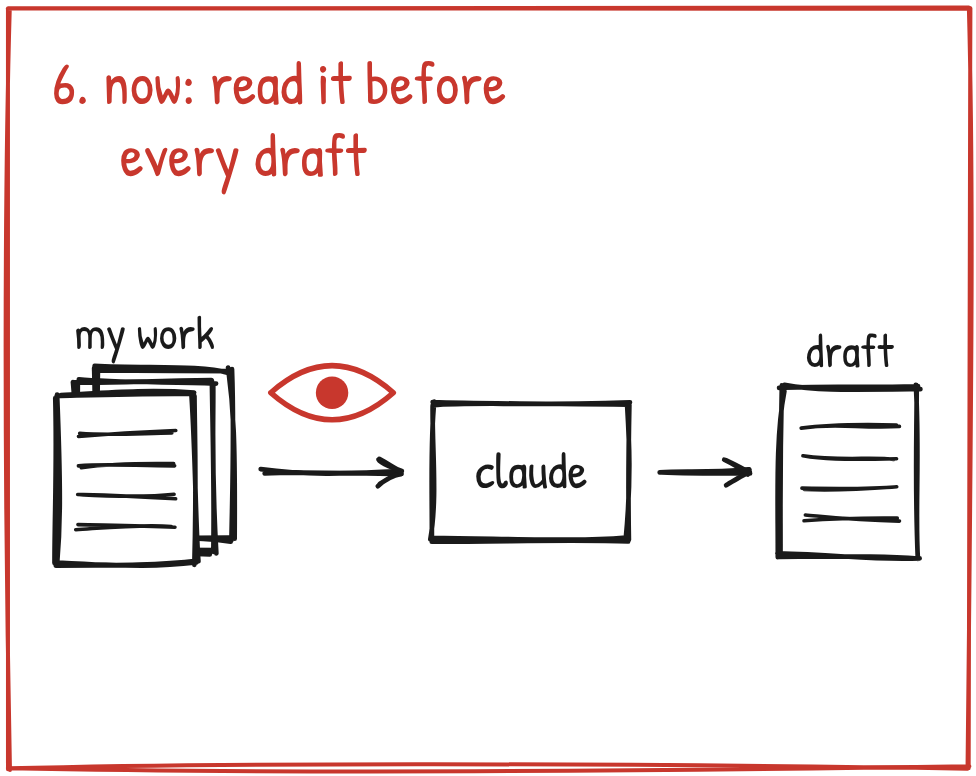

August 1. I'm on a landing page with Claude.

Five days earlier I'd set the whole thing up. A project just for my marketing. Then I loaded it.
My own sales letters. The notes from my own masterclass. Research on 16 copywriters.
If you've done this, you know the feeling. You hand it everything, and you figure now it knows you.

So I asked for a page to sell the Invisible Funnel. That one is mine. I built it.
We got a headline. Right sentiment. Moving in the right direction.
Then came the line under it.

Claude's:
"I made more money by refusing to sell than I did in twelve years of trying to."
Try after try like that.

So I asked the question I'd ask about anybody's copy.
"Would you opt in? Would you wanna read more? I wouldn't."
Claude's answer:
"Honest answer: no, I wouldn't either."
Later I said it flat.
"What you have is nonsense. We are... really got a lot a lot to learn."
I ended up writing the line myself.
"How I made more in one weekend than I ever have in any given year of owning my business..."
Then we went looking for why.

My instructions said protect the voice. Claude was checking that box once a session. Not before every draft.
It HAD my letters. It wasn't reading them when it wrote.
Here's what I took from it.
Loading your AI with your work is NOT the same as your AI using it.

That night a rule went in. Check the knowledge base before every draft. No "I already read it earlier this session."
I told it why.
"I don't want you to ever go to default mode and just create some generic boring nonsense."
Now, did it hold?
No. Same wall, October 15. That one is Stage 4 of this log.
So don't take my fix. Take the lesson.
Loading your AI with your work is NOT the same as your AI using it.
Make it go back to your work before every draft. Then ask it what it read.